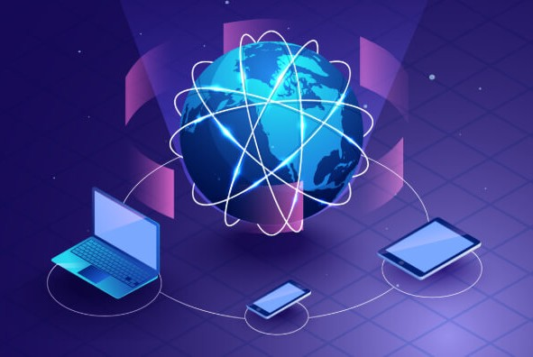
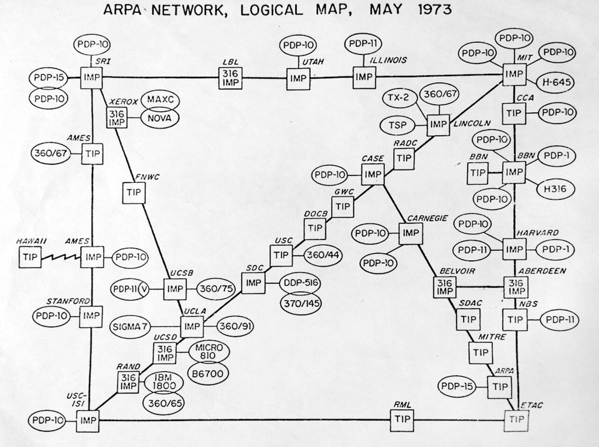

A Evolução das Tecnologias de Redes de Computadores
Introdução - O que é uma Rede de Computadores?
"A Internet revolucionou o mundo da computação e das comunicações como nada antes." - Barry M. Leiner, Vinton Cerf, David D. Clark, Robert Kahn, Leonard Kleinrock e outros, A Brief History of the Internet (1997). (tradução português)
As redes de computadores fazem parte de praticamente todas as atividades digitais realizadas atualmente. Ao enviar uma mensagem, acessarum site, assistir a um vídeo, jogar on-line ou simplesmente conectar um celular ao Wi-Fi, estamos utilizando algum tipo de rede para transmitir informações entre dispositivos.
As conexões podem ser feitas por cabos, como Ethernet e fibra óptica, ou sem fio, como o Wi-Fi.
A Internet é o maior exemplo de rede de redes: milhares de redes diferentes estão interligadas utilizando protocolos que permitem a comunicação entre dispositivos.

História - Como Surgiram?
A história das redes modernas começou principalmente com pesquisas realizadas durante as décadas de 1960 e 1970. Um dos conceitos mais importantes foi a comutação de pacotes, que permite dividir informações em pequenos pacotes para transmiti-los pela rede.
Em 1969, surgiu a ARPANET, uma rede financiada pela ARPA que conectava instituições de pesquisa nos Estados Unidos. Ela é considerada um dos principais antecedentes técnicos da Internet
Durante os anos 1970, Vinton Cerf e Robert Kahn desenvolveram o TCP/IP, conjunto de protocolos que permitiu conectar diferentes redes. Em 1º de janeiro de 1983, a ARPANET adotou oficialmente o TCP/IP, tornando-se um dos grandes marcos da evolução da Internet.

Linha do Tempo
Aqui estão os acontecimentos mais importantes na linha cronológica da evolução das redes de computadores:
- 1960s: pesquisas sobre comutação de pacotes;
- 1969: criação da ARPANET;
- 1970s: desenvolvimento da Ethernet e do TCP/IP;
- 1983: adoção do TCP/IP pela ARPANET;
- 1989: Tim Berners-Lee propõe a World Wide Web;
- 1990s: expansão da Internet para o público;
- 1997: primeiro padrão IEEE 802.11, base do Wi-Fi;
- 2000s: expansão da banda larga e das redes sem fio;
- 2010s: crescimento do 4G, computação em nuvem e IoT;
- 2020s: expansão do 5G e desenvolvimento de novas tecnologias de rede.
A World Wide Web, aliás, só apareceu depois da Internet: Tim Berners-Lee criou sua proposta no CERN em 1989, desenvolvendo posteriormente tecnologias como HTML e HTTP.
Comclusão
As redes de computadores evoluíram de experimentos que conectavam poucos computadores para uma infraestrutura mundial capaz de conectar bilhões de dispositivos. Tecnologias como ARPANET, TCP/IP, Ethernet, Web e Wi-Fi foram fundamentais nesse processo.
Hoje, as redes são essenciais para comunicação, entretenimento, trabalho, educação e diversos serviços digitais. E a evolução continua com tecnologias como 5G, Internet das Coisas e futuras redes 6G.